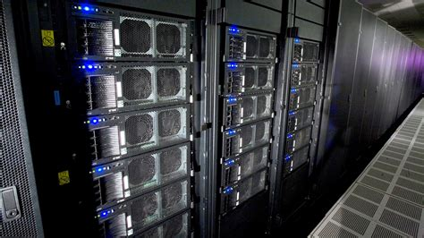

IBM Roadrunner made history in 2008 by becoming the world's first supercomputer to break the "petaflop barrier," achieving a sustained performance of over one petaflop (one quadrillion calculations per second). This marked a significant milestone in the field of high-performance computing. In June 2008, Roadrunner claimed the top spot on the prestigious TOP500 list of the world's most powerful supercomputers. This list is regularly updated, and at the time of Roadrunner's debut, it demonstrated IBM's prowess in pushing the boundaries of high-performance computing.
Roadrunner employed a unique hybrid architecture, combining conventional computer processors with specialized graphics processing units (GPUs). This hybrid design, consisting of AMD Opteron processors and IBM Cell processors originally developed for gaming consoles, allowed for improved performance and energy efficiency. Roadrunner's hybrid architecture and its success in breaking the petaflop barrier influenced subsequent supercomputer designs. The use of GPUs for specialized tasks gained traction, and the quest for ever-higher levels of computational performance continued in the development of subsequent supercomputers.
Built for the Los Alamos National Laboratory as part of the Advanced Simulation and Computing Program, Roadrunner was primarily designed to address complex scientific and nuclear research simulations. Its computational power enabled more accurate and detailed simulations, contributing to advancements in various scientific fields. Roadrunner contributed significantly to scientific research, particularly in areas such as materials science, astrophysics, and nuclear physics. The supercomputer's ability to handle complex simulations at unprecedented speeds provided researchers with valuable tools for studying intricate scientific phenomena.
Despite its immense computing power, Roadrunner was notable for its energy efficiency. The supercomputer achieved a high level of computational capability while being conscious of power consumption, a crucial factor in the design of modern supercomputers as energy efficiency continues to be a significant consideration.
The operational life of supercomputers is finite, and Roadrunner was officially decommissioned in 2013. While it no longer held the top spot on the TOP500 list by that time, its legacy persisted in the advancements it brought to high-performance computing and the doors it opened for future supercomputer designs.